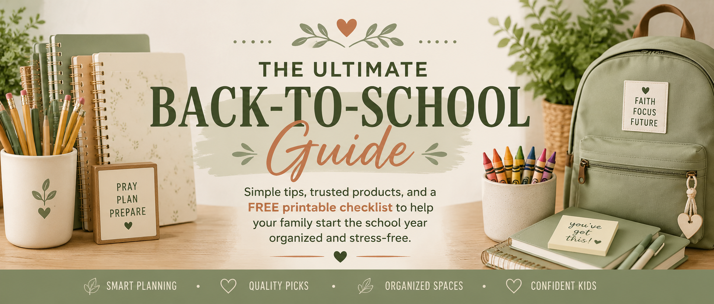
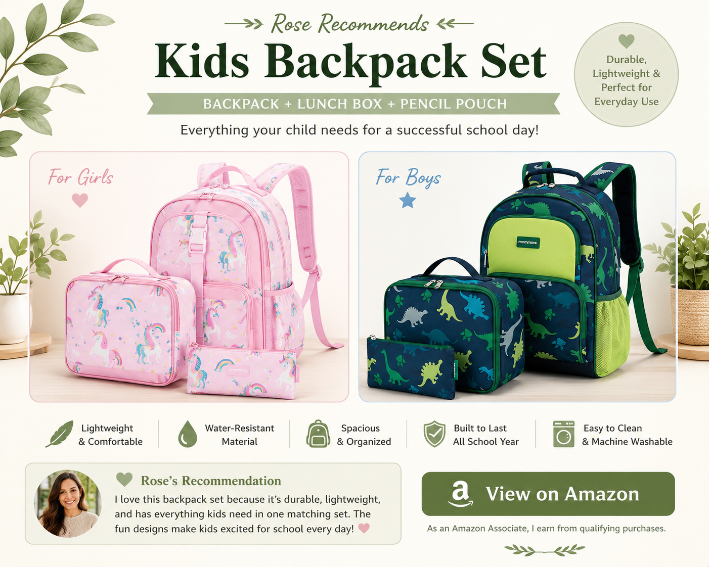
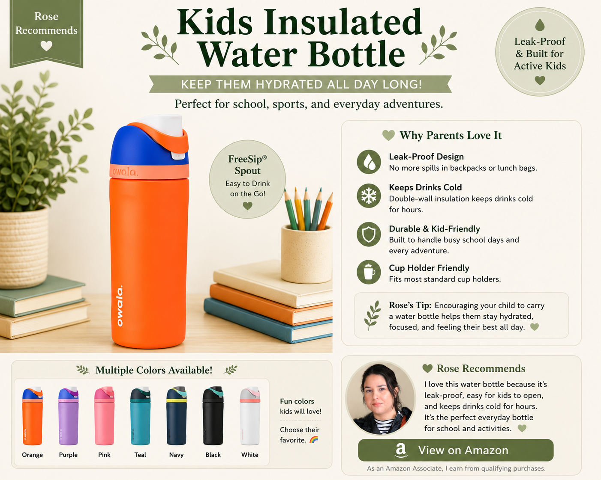
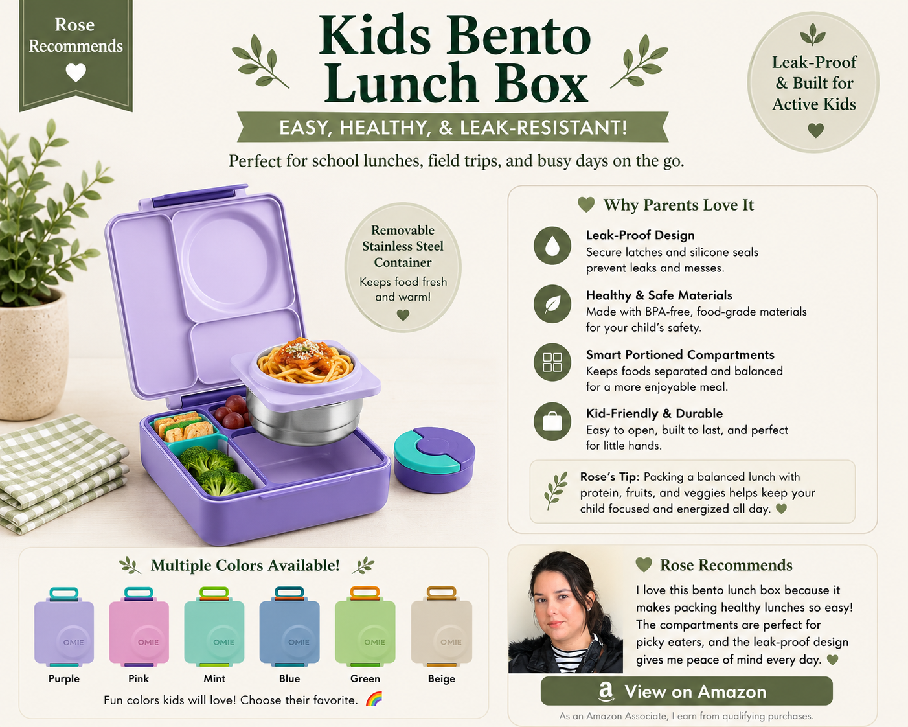
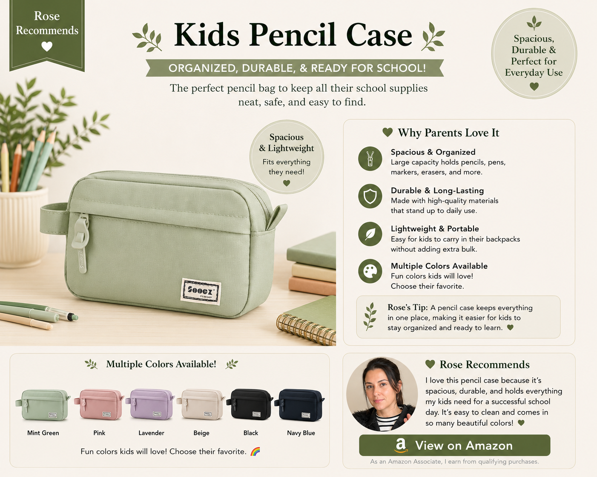
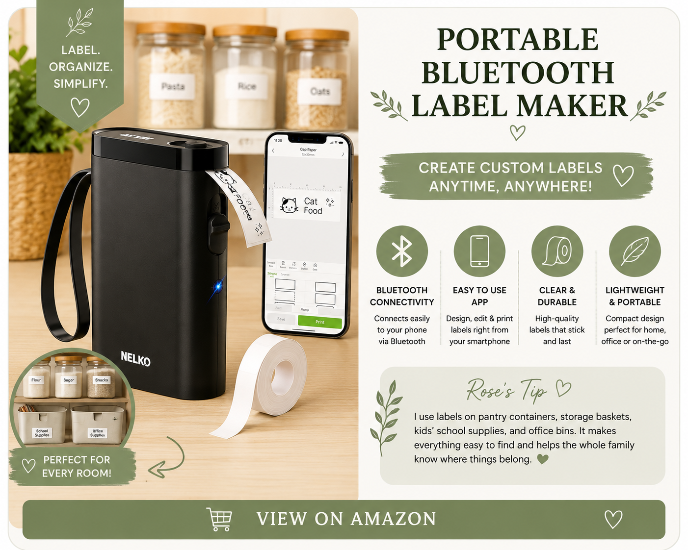
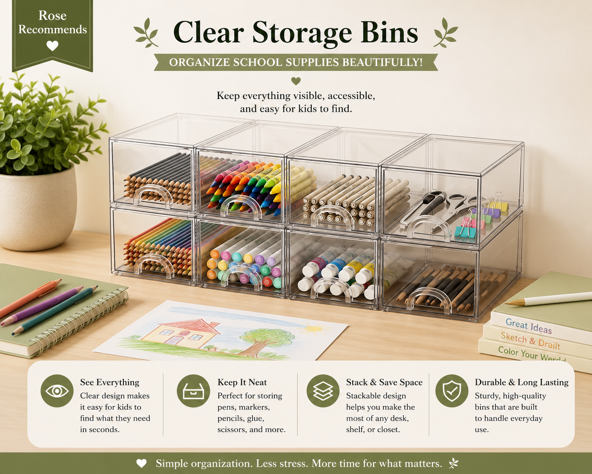
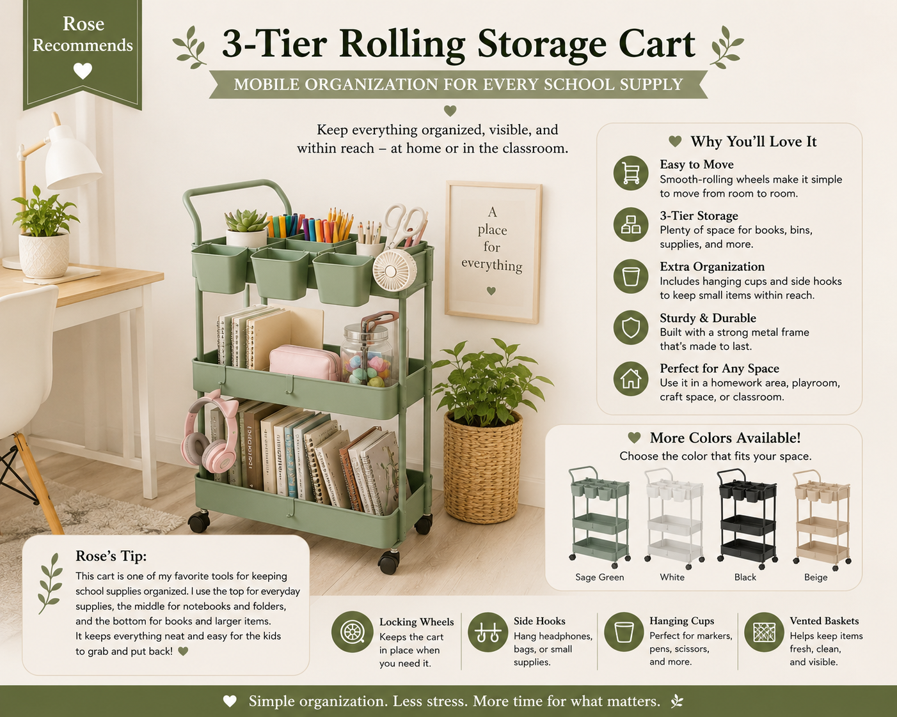
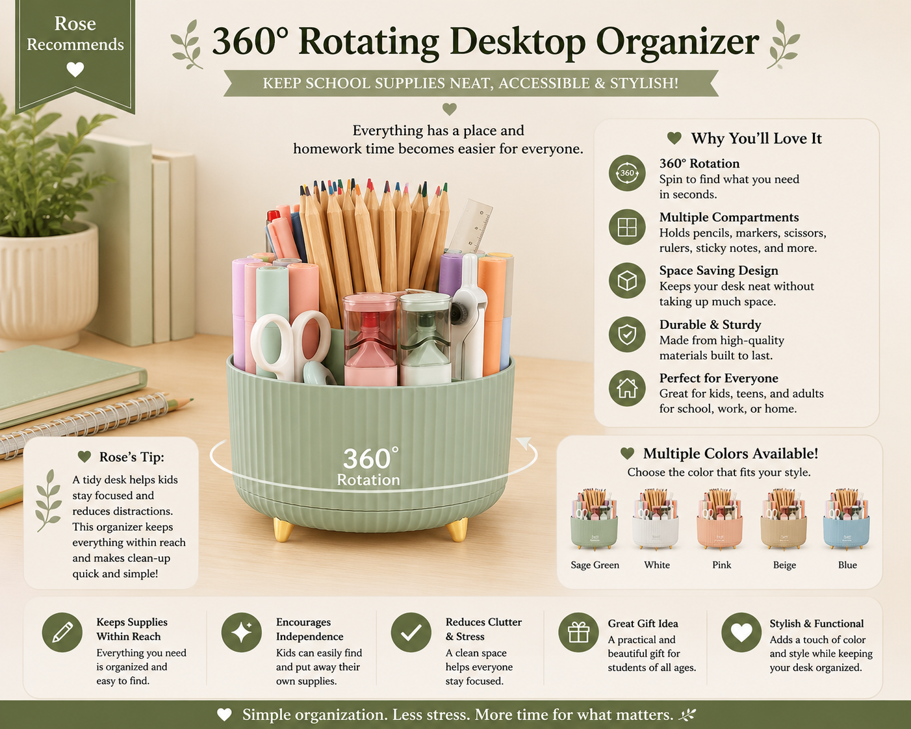
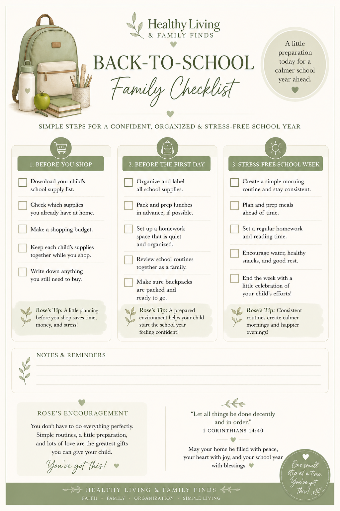

Back-to-school season doesn't have to feel overwhelming. With a little planning and a few simple systems, you can help your child start the school year feeling confident, prepared, and ready to learn.
In this guide, I'll walk you through practical steps to organize school supplies, create a functional homework space, and choose products that make everyday routines easier for the whole family.
You'll also find trusted recommendations, helpful organization tips, and a FREE printable Back-to-School Checklist to help you prepare with confidence.
Back-to-school season can feel overwhelming, but a little preparation goes a long way. Having a plan before school starts helps your family feel more organized, reduces last-minute stress, and gives your child a confident start to the new school year.
Preparing supplies before the first day helps eliminate last-minute shopping and forgotten items.
When children have everything they need, they can start the school year feeling prepared and ready to learn.
Checking what you already have at home before shopping helps avoid unnecessary purchases.
Organized supplies and simple systems make busy school mornings easier for the whole family.
This guide is designed to help you prepare for the school year with confidence. Instead of simply sharing products, I'll walk you through practical steps to plan ahead, organize school supplies, create simple routines, and build a homework space that works for your family.
Along the way, I'll also share trusted products I personally recommend, helpful organization tips, and a FREE printable Back-to-School Checklist to make preparing even easier.
Before buying anything, begin with the school supply list provided by your child's teacher or school. Every grade level—and sometimes every classroom—has different requirements, so using the official list helps you avoid unnecessary purchases and ensures your child has everything they need for the first day.
Take a few minutes to check what you already have at home before shopping. You may already have notebooks, folders, scissors, rulers, or other supplies that are still in great condition.
Making a simple plan before heading to the store can save money, reduce stress, and make back-to-school shopping much more enjoyable.
Not every school supply needs to be expensive, but choosing good-quality essentials can help them last the entire school year. Investing in durable items often saves money because they don't need to be replaced as frequently.
Focus on the items your child will use every day, such as a comfortable backpack, a sturdy lunch box, a reusable water bottle, and a pencil case that keeps supplies organized.
When possible, let your child help choose these everyday items. Giving them a choice can help them feel excited, confident, and prepared for the new school year.
These are the school products I personally recommend because they're practical, durable, and help make busy school mornings a little easier.

A durable backpack is one of the most important back-to-school purchases. I love this matching set because it includes a backpack, insulated lunch box, and pencil pouch in fun designs for both girls and boys. It's lightweight, comfortable, and designed for everyday school use.
💚 Rose's Tip: I recommend choosing a backpack that fits your child's size rather than buying one that's too large. A comfortable backpack is easier to carry every day and can last throughout the school year.
🎨 Available in multiple colors and fun designs for both girls and boys, making it easy for every child to choose a favorite.
View on Amazon
Staying hydrated throughout the school day is important for helping children stay focused and energized. I love this insulated water bottle because it's leak-proof, easy for little hands to use, and keeps drinks cold for hours. Plus, it's available in a variety of fun colors so every child can choose a favorite.
💚 Rose's Tip: Letting your child pick their favorite color makes them more excited to carry their water bottle every day. We also label each bottle with a name so it always makes it back home.
🌈 Available in multiple colors, so each child can pick one they'll love carrying to school every day.
View on Amazon
Packing healthy lunches is so much easier with a quality bento lunch box. I love this one because it keeps foods separated, includes a removable stainless steel container for warm meals, and is designed to help reduce leaks. It's available in several beautiful colors, making it easy for every child to choose a favorite.
💚 Rose's Tip: I like filling each compartment with a variety of healthy foods like fruit, vegetables, protein, and a small treat. It makes lunchtime fun while encouraging balanced eating.
🌈 Available in multiple beautiful colors so every child can pick one they'll be excited to use every day.
View on Amazon
Keeping pencils, pens, erasers, markers, scissors, and other small supplies together makes school mornings much easier. I love this spacious pencil case because it's lightweight, durable, and has plenty of room to keep everything organized without taking up too much space in a backpack. Plus, it's available in several beautiful colors, so every child can choose a favorite.
💚 Rose's Tip: I like filling the pencil case before the first day of school and checking it each weekend to replace any supplies that have been used. It helps mornings feel much less rushed.
🌈 Available in multiple beautiful colors to match your child's backpack, lunch box, or personal style.
View on Amazon📚 Now that your school essentials are ready, let's organize everything so mornings feel calmer and less stressful.
Once you've gathered your child's school supplies, having a few simple organization tools can make a big difference. These are the products I personally recommend to keep supplies organized, easy to find, and ready for busy school mornings.
Once you've finished shopping, take a little time to organize everything before the first day of school. Preparing supplies in advance helps mornings run more smoothly and makes it easier for children find exactly what they need.
Separate supplies by child, label personal items when appropriate, and store extra supplies in one convenient place for the rest of the school year. Having a simple system now can save a lot of time later.
If you have more than one child, consider using separate storage bins or baskets for each child. This keeps everything organized and prevents supplies from getting mixed together.

Labeling school supplies is one of the easiest ways to keep everything organized throughout the school year. I love this compact Bluetooth label maker because it connects to your phone, creates neat labels in seconds, and helps keep folders, notebooks, supply bins, lunch boxes, and water bottles easy to identify.
💚 Rose's Tip: Before the first day of school, I label lunch boxes, water bottles, folders, supply bins, and any items that will be taken to school. It helps prevent lost belongings and teaches children where everything belongs.
📱 Easy Bluetooth connection with multiple label styles and tape colors available for different organization needs.
View on Amazon
Clear storage bins make it easy to organize school supplies by category while keeping everything visible and easy to find. I love using them for pencils, markers, crayons, glue sticks, scissors, notebooks, and craft supplies. They're stackable, durable, and help create simple systems that the whole family can maintain.
💚 Rose's Tip: I like giving each child their own labeled bin for homework supplies and another for art materials. Since the bins are clear, everyone can quickly see what's inside without making a mess looking for something.
✨ Stackable design helps save space while keeping desks, shelves, and homework stations neat and organized.
View on Amazon
A rolling storage cart is one of my favorite ways to keep school supplies organized and easy to access. I use it to store notebooks, folders, craft supplies, markers, scissors, glue sticks, and everything my children need for homework or creative projects. Since it rolls from room to room, it's perfect for families who don't have a dedicated homework space.
💚 Rose's Tip: I like keeping the top shelf stocked with everyday school supplies, the middle shelf for notebooks and folders, and the bottom shelf for books and larger items. Everything stays organized and easy for kids to put away on their own.
🌈 Available in multiple beautiful colors to match your home décor or your child's study space.
View on Amazon
A desktop organizer keeps everyday school supplies neat, organized, and within easy reach. I love this rotating organizer because it makes it simple to store pencils, markers, scissors, rulers, highlighters, sticky notes, and other classroom essentials without creating desk clutter. The 360° rotating design allows children to quickly find what they need during homework time.
💚 Rose's Tip: Keep only the supplies your child uses every day on the desk. Store extra supplies in labeled bins nearby and refill the organizer as needed. This simple habit helps children stay focused and makes cleanup much easier.
🌈 Available in multiple beautiful colors to match your child's study space, bedroom, or homework station.
View on AmazonYour child doesn't need a large desk or a perfectly decorated study room to succeed. A quiet, comfortable space with the supplies they need can make homework time more productive and less stressful.
Choose a well-lit area where your child can focus with minimal distractions. Keep everyday supplies like pencils, erasers, crayons, scissors, glue, and notebooks within easy reach so homework can begin without searching for materials.
Simple organization systems help children become more independent and make it easier to build consistent homework routines throughout the school year.
The first week of school often feels exciting, but it can also be overwhelming for both parents and children. Preparing a few simple routines ahead of time can help everyone start the school year feeling calm, confident, and ready for success.
Try packing backpacks the night before, preparing lunches in advance when possible, laying out clothes for the next day, and setting consistent bedtime routines a few days before school begins. These small habits can make busy mornings much less stressful.
Remember that every family adjusts at its own pace. Focus on creating simple routines that work for your home instead of trying to make everything perfect.
The products in this guide can help make school life easier, but the routines you build at home are what truly make the difference. A few minutes of preparation each day can lead to calmer mornings, less stress, and more confidence throughout the school year.
A successful school year isn't measured by having the perfect backpack or the newest supplies. Children thrive when they feel loved, encouraged, and supported. The simple routines you create today will help your family enjoy a calmer, more confident start to the school year. One small step at a time. 🌿
Remember, healthy living isn't about perfection—it's about creating simple habits that bring more peace, joy, and confidence to your family's everyday life. You've got this. 💚
"Let all things be done decently and in order."
— 1 Corinthians 14:40
Thank you for visiting my guide. I hope it inspires you to organize one small space at a time. May God bless your home and your family. 💚
With love,
Rose
Preparing for a new school year doesn't have to feel overwhelming. Download this FREE printable checklist to help you stay organized, reduce stress, and prepare your family with confidence.
